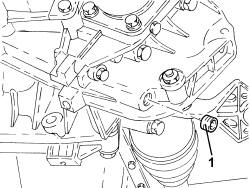

0010T40 change manual gearbox oil
- Path
- Procedures > 00 MAINTENANCE > 0010 NEW VEHICLES AND MAINTENANCE > 0010T VEHICLE FLUIDS > 0010T40 change manual gearbox oil
- Kind
- repair procedure (removal / refitting; the operation number is the code)
- Applies to
- all engines; all production periods
- Interactive page
- https://sloeber94.github.io/elrnDB-fDbl/en/#/2584124
Applies to: engines: 1.2 8v, 1.6 16v, 1.3 JTD 16V, 1.9 JTD 8V, 1.9 DIESEL; all production periods
Position the vehicle on a lift.
Raise the vehicle.
Undo the gearbox casing filler plug.
Undo the gearbox casing drain plug and collect the fluid in a suitable container.
Clean the drain plug.
Screw in the drain plug and tighten it to the recommended torque.
Fastening | Component | dia | Value (daNm) | |
|---|---|---|---|---|
- | Tapered plug | GEAR CASING PADS | M22 x 1.5 | 3.6 |
Introduce the oil into the gearbox casing via the filler opening.
Type | Component | Description | Qty. | |
|---|---|---|---|---|
- | Oil | MANUAL GEARBOX/DIFFERENTIAL FLUID | TUTELA CAR ZC 75 Synth | 1.98 |
Check the fluid level is up to the lower edge of the filler hole.
Clean the filler plug.
Tighten the filler plug to the specified torque.
Fastening | Component | dia | Value (daNm) | |
|---|---|---|---|---|
- | Tapered plug | GEAR CASING PADS | M22 x 1.5 | 3.6 |
Lower the vehicle and remove from the lift.
Applies to: engines: 1.4 8v; production: da 12/03; only with equipment: MY 2005
Position the vehicle on a lift.
1. Undo the gearbox casing filler plug.

Applies to: engines: 1.4 8v; production: da 12/03; only with equipment: MY 2005
1. Undo the gearbox casing drain plug and collect the fluid in a suitable container.

Applies to: engines: 1.4 8v; production: da 12/03; only with equipment: MY 2005
Clean the drain plug and tighten it to the recommended torque.
Fastening | Component | dia | Value (daNm) | |
|---|---|---|---|---|
- | Drain plug | GEAR CASING PADS | M16 | (Differential side) 1.6 - 2.0 |
Refill the gearbox with the specified fluid through the filler hole.
Type | Component | Description | Qty. | |
|---|---|---|---|---|
- | Oil [l] | MANUAL GEARBOX/DIFFERENTIAL | TUTELA CAR ZC 75 SYNTH | 1.98 |
Check the fluid level is up to the lower edge of the filler hole.
Clean the drain plug, refit and tighten it to the recommended torque.
Fastening | Component | dia | Value (daNm) | |
|---|---|---|---|---|
- | Filler plug | GEAR CASING PADS | M22 | (Differential side) 2.3 - 2.8 |
Remove the vehicle from the lift.
Topics that link to this page (9)
- 1004B10 POWER UNIT WITH MANUAL GEARBOX - R.R
- 1004B12 power unit with manual gearbox - r+r for versions with a/c
- 1004d10 power unit (manual gearbox), removed, remove and re-build
- 1004D10 POWER UNIT (MANUAL GEARBOX), REMOVED, REMOVE AND REASSEMBLE
- 1020D38 flywheel side oil seal - replace
- 1024B10 engine flywheel - r + r for versions with manual gearbox
- 1024B54 ENGINE FLYWHEEL PROTECTION - R.R
- 1810A20 clutch - r + r
- 1820a24 thrust bearing linkage - r + r